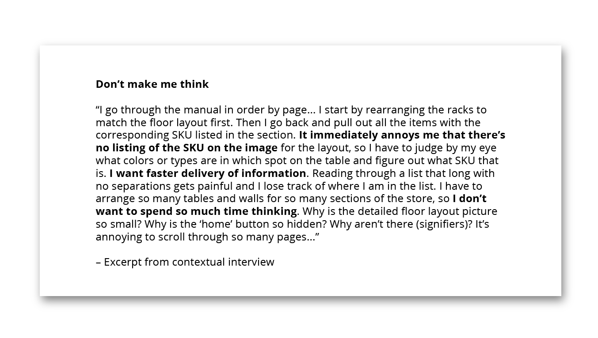

As part of a take-home design exercise, I was asked to create rough sketches for what Old Navy’s style guides might look like on mobile devices. I approached this challenge similar to how I might approach it as a whiteboard design exercise with the interviewer as an observer.
Old Navy’s shift from PDF to web
Currently, Old Navy’s designers send style guides as interactive PDFs to store sales associates. From previous conversations with the art director and my own experience going through the style guides for the first time, it seemed that there was an opportunity to make the process of updating store layouts less frustrating and improve execution through an online platform. The business objective would be to increase sales.
Understanding the user and ideating solutions
The main users of the style guides are department managers and sales associates that assist customers, act as cashiers, organize displays, and keep product stocked — people who are frequently on their feet and juggling different tasks. To user test and identify immediate pain points, I pulled a friend aside to walk through how he might use the PDF in updating a store display. From their feedback, I found that it can be easy to lose track of where you are in the PDf if you need to assist a customer momentarily as items were not always not directly labeled with their SKUs.
I created a chart to visualize the levels of content and referenced planogram software and web mapping services (e.g. Google Maps, Simon Malls).
Design Principles
Next steps would be to test a clickable prototype in InVision to compare time spent setting up a display using the prototype versus using the PDF. We’d expect the prototype to do better than the PDF with continued use even with associates used to navigating the PDF.
Did I solve the design challenge? Yes and no. I liked that the solution visually reorganizes the information, but the feasibility of building it is another issue. While working through the limitations of take-home design challenges, I had also started to question why the shift to a web application.
It was difficult not being able to ask questions and get feedback as I went through this challenge. As I presented my process, the interviewer brought up that there weren’t any resources or developers available to the build my solution, and that realistically there would be just 1-2 designers developing this project on the side. They also mentioned that it was difficult on the design side to produce the style guides because of continuously updated spreadsheets and photos from multiple sources. These were issues I hadn’t considered, and the main takeaway from this experience for me was to spend more time asking questions at the beginning of a project to better understand its context and avoid spending time and energy on an infeasible solution.